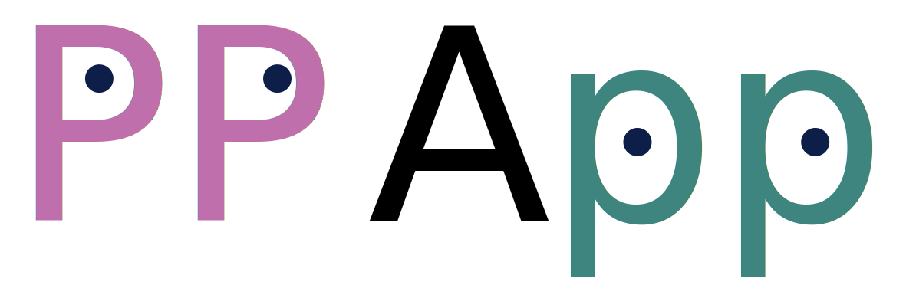

Employing unsupervised learning techniques for the analysis and curation of crystal
structure databases, whether obtained experimentally or through ab initio calculations.
Developing and benchmarking supervised machine learning models for predicting materials
properties. This involves tailoring models with inductive biases (for limited datasets),
incorporating
epistemic uncertainty, and utilizing multi-fidelity methods.
Implementing active learning strategies to accelerate experimental processes.
Utilizing generative algorithms for the creation of stable crystal structures.
Designing crystals for applications in solid electrolytes and electrocatalysis.
Conducting high-throughput Density Functional Theory (DFT) and DFPT analysis.
Published tools
A
supervised machine learning
framework for learning material properties from
either the composition or crystal structure. The framework is well suited for limited
datasets and can be used for learning multiple properties together by using joint learning.
 Plasticty Predictor App A simple web
application for predicting the joint activation
of the TRIP and TWIP effects in Titanium alloys for
improved work hardening.
B2 Predictor App A simple web
app for predicting the probability of B2-phase crystallization.